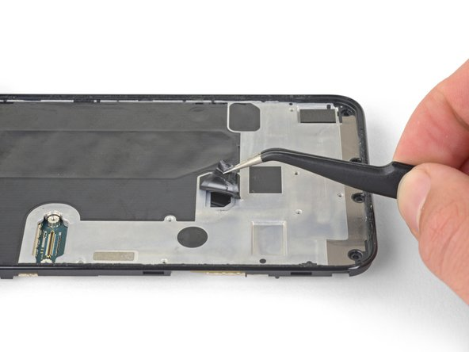
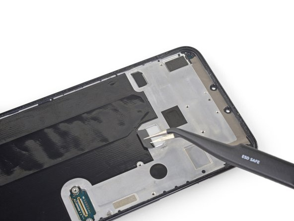
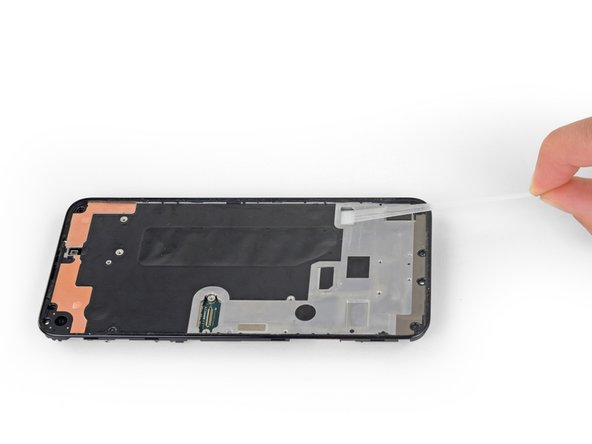
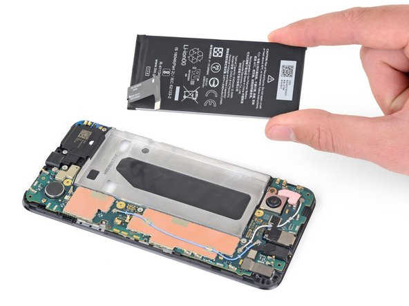

Diagnose and replace an Android battery
Work out why a phone loses charge quickly. Then find the battery adhesive, remove the battery on a Pixel 4a and repeat the same checks after reassembly.
Check what the phone actually does
The battery stores energy so the phone can run unplugged. The charging circuit controls how that energy is put back. The battery percentage is the phone’s estimate of charge remaining. An older cell can hold less energy when the phone says 100% or drop in voltage when asked to supply more current. For the underlying measurements, read T28 · Lithium-ion cells, charging and protection.
Back up your own donor phone and confirm it is the Pixel 4a with the 5.81-inch screen. Check the edges for a lifted screen or cover and look for impact damage before charging or running tests. For swelling or damage, stop using and charging the phone and hand it over for safe handling. See the Galaxy A13 swelling photo in P35.
| What the owner sees | First check |
|---|---|
| The charge lasts much less time | Review Battery usage in Settings. Record starting and ending percentages for a short, repeatable activity using the same brightness and radio settings. Background apps and signal conditions can change the result. |
| It shuts off with charge showing | Note the displayed percent and the activity at the shutdown. Repeat a normal activity at room temperature on a physically sound phone. A tired battery is a suspect. Record whether normal startup returns on a known-good charger. |
| Charging repeatedly starts and stops | Rule out the charger, cable and port first, using P35’s external charging comparison. |
A 2025 battery-management update changed usable capacity and charging performance on some Pixel 4a units. Ask when the symptom started and compare it with the model’s update history before you quote a repair. Google’s battery performance program ended in January 2026. Google’s Pixel 4a battery update notice.
Find the pack and the two adhesive tabs
For this exercise use an intact, unmodified donor and a replacement specifically listed for the Pixel 4a 4G. Have new battery adhesive and screen adhesive ready before opening. Discharge the working donor below 25%, shut it down and unplug it. Use the plastic opening tools and fastener map from P34. Complete Pixel 4a battery guide · Battery and model compatibility reference.
The battery lies in a shallow recess in the midframe. Its flex plugs into the mainboard. Use P34 to remove the display, then P34 to reach and unplug the battery. The battery guide has the additional SIM tray and back-cover steps. Before lifting the rear cover fully, release its two flex connectors in the guide. Turn over the freed midframe and look for black tape at two openings near the bottom edge. iFixit · Rear-cover disconnection.

Photo by Sam Omiotek for iFixit, scaled for the course, with labels added. iFixit guide, step 30 · CC BY-NC-SA 3.0.

Photo by Sam Omiotek for iFixit, scaled for the course, with labels added. iFixit guide, step 31 · CC BY-NC-SA 3.0.
Watch on YouTube · Pause after the rear shell comes away. Find the two places where the strips pass through the frame and observe the direction of the pull. DIYgeardo’s Google Pixel 4a battery replacement.
Release the adhesive and fit the replacement
Expose both tabs through the midframe openings. Lift just enough of a tab to catch it between your fingers. Keep tool tips away from the pouch.
Pull one strip at a time towards the bottom end of the phone. Keep it flat and low to the frame as it lengthens. The battery should come free when both strips have released. If a strip snaps under the battery and the pack stays stuck, stop pulling on the pack. Follow the guide’s stuck-strip procedure with experienced help. iFixit · Release and stuck-strip recovery.
Compare both packs on the bench. Check the outline and flex position. Use fresh model-fit adhesive and seat the pack flat in its recess with the flex aligned to the socket. Keep the charger unplugged and the battery flex disconnected while seating the pack. Reassemble with the battery, rear-cover and display connections in the model guide’s order.

Photo by Sam Omiotek for iFixit, scaled for the course, with labels added. iFixit guide, step 32 · CC BY-NC-SA 3.0.

Photo by Sam Omiotek for iFixit, scaled for the course, with labels added. iFixit guide, step 33 · CC BY-NC-SA 3.0.
Repeat the same test after reassembly
Confirm the screen and back sit flat. Boot unplugged, then charge with the same proven adapter and cable. Record whether the percentage rises and whether the phone stays on when unplugged.
Repeat the original activity at comparable starting charge, brightness and temperature. Record the duration, percentages and any unexpected shutdown. Check touch, buttons, and the fingerprint reader because their connections were disturbed.
On the job sheet, record the initial symptom, why the battery was selected, and what improved. Take the old pack to a battery collection point or recycler that accepts phone batteries. Keep the battery out of household waste. Google’s disposal guidance.
The phone shows 100% when unplugged. What would tell you the repair helped?
Repeat the same activity under comparable conditions. A longer run or a missing shutdown supports improvement. Also prove the phone still gains charge and starts unplugged.
P35 · Diagnose a phone that still won’t charge · C16 · Record the job.